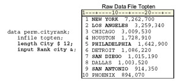

Overview
Introduction
As you learned in the Chapter, Reading Raw Data in Fixed Fields, raw data can be organized in several ways.
This external file contains data that is arranged in columns, or fixed fields. You can specify a beginning and ending column for each field.
By contrast, the following external file contains data that is free format, meaning data that is not arranged in columns. Notice that the values for a particular field do not begin and end in the same columns.
In the previous chapter, you learned that how your data is organized determines which input style you should use to read the data. SAS provides three primary input styles: column, formatted, and list input. Previously, you learned how to use column input and formatted input. This chapter teaches you how to use list input to read free-format data that is not arranged in fixed fields.
Objectives
In this chapter, you learn to use the INPUT statement with list input to read
- free-format data (data that is not organized in fixed fields)
- free-format data that is separated by nonblank delimiters, such as commas
- free-format data that contains missing values
- character values that exceed eight characters
- nonstandard free-format data
- character values that contain embedded blanks
In addition, you learn how to mix column, formatted, and list input styles in a single INPUT statement.
Reading Free-Format Data
You have already worked with raw data that is in fixed fields. In doing so, you used column input to read standard data values in fixed fields. You have also used formatted input to read both standard and nonstandard data in fixed fields.
Suppose you have raw data that is free format; that is, it is not arranged in fixed fields. The fields are often separated by blanks or by some other delimiter, such as the pound sign (#) shown below. In this case, column input and formatted input that you might have used before to read standard and nonstandard data in fixed fields will not enable you to read all of the values in the raw data file.
Using List Input
List input is a powerful tool for reading both standard and nonstandard free-format data.
General form, INPUT statement using list input:
INPUT variable <$>;
where
- variable specifies the variable whose value the INPUT statement is to read
- $ specifies that the variable is a character variable
Suppose you have an external data file like the one that follows. The file, which is referenced by the fileref Credit, contains the results of a survey on the use of credit cards by males and females in the 18-39 age range.
You need to read the data values for
- gender
- age
- number of bank credit cards
- bank card use per month
- number of department store credit cards
- department store card use per month
List input might be the easiest input style to use because, as shown in the INPUT statement below, you simply list the variable names in the same order as the corresponding raw data fields. Remember to distinguish character variables from numeric variables.
input Gender $ Age Bankcard FreqBank Deptcard
FreqDept;
Processing List Input
It's important to remember that list input causes SAS to scan the input lines for values rather than reading from specific columns. When the INPUT statement is submitted for processing, the input pointer is positioned at column 1 of the raw data file, as shown below.
data perm.survey;
infile credit;
input Gender $ Age Bankcard FreqBank Deptcard
FreqDept;
run;
SAS reads the first field until it encounters a blank space. The blank space indicates the end of the field, and the data value is assigned to the program data vector for the first variable in the INPUT statement.
Next, SAS scans the record until the next nonblank space is found, and the second value is read until another blank is encountered. Then the value is assigned to its corresponding variable in the program data vector.
This process of scanning ahead to the next nonblank column, reading the data value until a blank is encountered, and assigning the value to a variable in the program data vector continues until all the fields have been read and values have been assigned to variables in the program data vector.
When the DATA step has finished executing, you can display the data set with the PRINT procedure. The code below produces the output that follows.
proc print data=perm.survey; run;
| (Partial Output) | ||||||
|---|---|---|---|---|---|---|
| Obs | Gender | Age | Bankcard | FreqBank | Deptcard | FreqDept |
| 1 | MALE | 27 | 1 | 8 | 0 | 0 |
| 2 | FEMALE | 29 | 3 | 14 | 5 | 10 |
| 3 | FEMALE | 34 | 2 | 10 | 3 | 3 |
| 4 | MALE | 35 | 2 | 12 | 4 | 8 |
| 5 | FEMALE | 36 | 4 | 16 | 3 | 7 |
| 6 | MALE | 21 | 1 | 5 | 0 | 0 |
| 7 | MALE | 25 | 2 | 9 | 2 | 1 |
Working with Delimiters
Most free-format data fields are clearly separated by blanks and are easy to imagine as variables and observations. But fields can also be separated by other delimiters, such as commas, as shown below.
When characters other than blanks are used to separate the data values, you can tell SAS which field delimiter to use. Use the DLM= option in the INFILE statement to specify a delimiter other than a blank (the default).
General form, DLM= option:
DLM=delimiter(s)
where delimiter(s) specifies a delimiter for list input in either of the following forms:
- 'list-of-delimiting-characters' specifies one or more characters (up to 200) to read as delimiters. The list of characters must be enclosed in quotation marks
- character-variable specifies a character variable whose value becomes the delimiter
Example
The following program creates the output shown below.
data perm.survey;
infile credit dlm=',';
input Gender $ Age Bankcard FreqBank
Deptcard FreqDept;
run;
proc print data=perm.survey;
run;
| Obs | Gender | Age | Bankcard | FreqBank | Deptcard | FreqDept |
|---|---|---|---|---|---|---|
| 1 | MALE | 27 | 1 | 8 | 0 | 0 |
| 2 | FEMALE | 29 | 3 | 14 | 5 | 10 |
| 3 | FEMALE | 34 | 2 | 10 | 3 | 3 |
| 4 | MALE | 35 | 2 | 12 | 4 | 8 |
| 5 | FEMALE | 36 | 4 | 16 | 3 | 7 |
| 6 | MALE | 21 | 1 | 5 | 0 | 0 |
| 7 | MALE | 25 | 2 | 9 | 2 | 1 |
| 8 | FEMALE | 21 | 1 | 4 | 2 | 6 |
| 9 | MALE | 38 | 3 | 11 | 4 | 3 |
| 10 | FEMALE | 30 | 3 | 5 | 1 | 0 |
| Warning | The field delimiter must not be a character that occurs in a data value. For example, this raw data file contains values for LastName and Salary. Notice that the values for Salary contain commas. |
|---|
| SAS Data Set | ||
|---|---|---|
| Obs | LastName | Salary |
| 1 | BROWN | 24 |
| 2 | JOHNSON | 25 |
| 3 | McABE | 21 |
| Note | Later in this chapter, you'll learn how to work with data values that contain delimiters. |
|---|
Reading a Range of Variables
When the variable values in the raw data file are sequential and are separated by a blank (or by another delimiter), you can specify a range of variables in the INPUT statement. This is especially useful if your data contains similar variables, such as the answers to a questionnaire.
For example, the following INPUT statement creates five new numeric variables and assigns them the names Ques1, Ques2, Ques3, and so on. You can also specify a range in the VAR statement in the PROC PRINT step to list a range of specific variables.
data survey.phone;
infile survey;
input IDnum $ Ques1-Ques5;
run;
proc print data=survey.phone;
var ques1-ques3;
run;
| Obs | Ques1 | Ques2 | Ques3 |
|---|---|---|---|
| 1 | 23 | 94 | 56 |
| 2 | 26 | 55 | 49 |
| 3 | 33 | 99 | 54 |
| 4 | 71 | 33 | 22 |
| 5 | 88 | 49 | 29 |
If you are specifying a range of character variables, both the variable list and the $ sign must be enclosed in parentheses.
data survey.stores;
infile stordata;
input Age (Store1-Store3) ($);
run;
proc print data=survey.stores;
| Warning | You can also specify a range of variables using formatted input. If you specify a range of variables using formatted input, both the variable list and the format must be enclosed in parentheses, regardless of the variable's type. |
|---|
data test.scores;
infile group3;
input Age (Score1-Score4) (6.);
run;
Limitations of List Input
In its default form, list input places several limitations on the types of data that can be read:
- Although the width of a field can be greater than eight columns, both character and numeric variables have a default length of 8. Character values that are longer than eight characters will be truncated
- Data must be in standard numeric or character format
- Character values cannot contain embedded delimiters
- Missing numeric and character values must be represented by a period or some other character
| Note | There are ways to work around these limitations using modified list input, which will be discussed later in this chapter |
|---|
Reading Missing values
Reading Missing Values at the End of a Record
Suppose the third person represented in the raw data file below did not answer the questions about how many department store credit cards she has and how often she uses them.
Because the missing values occur at the end of the record, you can use the MISSOVER option in the INFILE statement to read the missing values at the end of the record. The MISSOVER option prevents SAS from going to another record if, when using list input, it does not find values in the current line for all the INPUT statement variables. At the end of the current record, values that are expected but not found are set to missing.
For the raw data file shown above, the MISSOVER option prevents the fields in the fourth record from being read as values for Deptcard and FreqDept in the third observation. Note that Deptcard and FreqDept are set to missing.
data perm.survey;
infile credit missover;
input Gender $ Age Bankcard FreqBank
Deptcard FreqDept;
run;
proc print data=perm.survey;
run;
| Obs | Gender | Age | Bankcard | FreqBank | Deptcard | FreqDept |
|---|---|---|---|---|---|---|
| 1 | MALE | 27 | 1 | 8 | 0 | 0 |
| 2 | FEMALE | 29 | 3 | 14 | 5 | 10 |
| 3 | FEMALE | 34 | 2 | 10 | . | . |
| 4 | MALE | 35 | 2 | 12 | 4 | 8 |
| 5 | FEMALE | 36 | 4 | 16 | 3 | 7 |
| 6 | MALE | 21 | 1 | 5 | 0 | 0 |
| Warning | The MISSOVER option works only for missing values that occur at the end of the record |
|---|
Reading Missing Values at the Beginning or Middle of a Record
Remember that the MISSOVER option works only for missing values that occur at the end of the record. A different method is required when you are using list input to read raw data that contains missing values at the beginning or middle of a record. Let's look at what happens when a missing value occurs at the beginning or middle of a record.
Suppose the value for Age is missing in the first record.
When the program below executes, each field in the raw data file is read one by one. The INPUT statement tells SAS to read six data values from each record. However, the first record contains only five values.
data perm.survey;
infile credit dlm=',';
input Gender $ Age Bankcard FreqBank
Deptcard FreqDept;
run;
proc print data=perm.survey;
run;
The two commas in the first record are interpreted as one delimiter. The incorrect value (1) is read for Age. The program continues to read subsequent incorrect values for Bankcard (8), FreqBank (0), and Deptcard (0). The program then attempts to read the character filed FEMALE, at the beginning of the second record, as the value for the numeric variable FreqDept. This causes the value of FreqDept in the first observation to be interpreted as missing. The input pointer then moves down to the third record to begin reading values for the second observation. Therefore, the first observation in the data set contains incorrect values and values from the second in the raw data file are not included.
| Obs | Gender | Age | Bankcard | FreqBank | Deptcard | FreqDept |
|---|---|---|---|---|---|---|
| 1 | MALE | 1 | 8 | 0 | 0 | . |
| 2 | FEMALE | 34 | 2 | 10 | 3 | 3 |
| 3 | MALE | 35 | 2 | 12 | 4 | 8 |
| 4 | FEMALE | 36 | 4 | 16 | 3 | 7 |
The DSD Option
You can use the DSD option in the INFILE statement to correctly read the raw data. The DSD option changes how SAS treats delimiters when list input is used. Specifically, the DSD option
- sets the default delimiter to a comma
- treats two consecutive delimiters as a missing value
- removes quotation marks from values
When the following program reads the raw data file, the DSD option sets the default delimiter to a comma and treats the two consecutive delimiters as a missing value. Therefore, the data is read correctly.
data perm.survey;
infile credit dsd;
input Gender $ Age Bankcard FreqBank
Deptcard FreqDept;
run;
proc print data=perm.survey;
run;
| Obs | Gender | Age | Bankcard | FreqBank | Deptcard | FreqDept |
|---|---|---|---|---|---|---|
| 1 | MALE | . | 1 | 8 | 0 | 0 |
| 2 | FEMALE | 29 | 3 | 14 | 5 | 10 |
| 3 | FEMALE | 34 | 2 | 10 | 3 | 3 |
| 4 | MALE | 35 | 2 | 12 | 4 | 8 |
| 5 | FEMALE | 36 | 4 | 16 | 3 | 7 |
The DLM= Option
If the data uses multiple delimiters or a single delimiter other than a comma, then simply specify the delimiter value(s) with the DLM= option. In the following example, an asterisk (*) is used as a delimiter. However, the data is still read correctly because of the DSD option.
data perm.survey;
infile credit dsd dlm='*';
input Gender $ Age Bankcard FreqBank
Deptcard FreqDept;
run;
proc print data=perm.survey;
run;
| Obs | Gender | Age | Bankcard | FreqBank | Deptcard | FreqDept |
|---|---|---|---|---|---|---|
| 1 | MALE | . | 1 | 8 | 0 | 0 |
| 2 | FEMALE | 29 | 3 | 14 | 5 | 10 |
| 3 | FEMALE | 34 | 2 | 10 | 3 | 3 |
| 4 | MALE | 35 | 2 | 12 | 4 | 8 |
| 5 | FEMALE | 36 | 4 | 16 | 3 | 7 |
The DSD option can also be used to read raw data when there is a missing value at the beginning of a record, as long as a delimiter precedes the first value in the record.
data perm.survey;
infile credit dsd;
input Gender $ Age Bankcard FreqBank
Deptcard FreqDept;
run;
proc print data=perm.survey;
run;
| Obs | Gender | Age | Bankcard | FreqBank | Deptcard | FreqDept |
|---|---|---|---|---|---|---|
| 1 | MALE | 27 | 1 | 8 | 0 | 0 |
| 2 | FEMALE | 29 | 3 | 14 | 5 | 10 |
| 3 | FEMALE | 34 | 2 | 10 | 3 | 3 |
| 4 | MALE | 35 | 2 | 12 | 4 | 8 |
| 5 | FEMALE | 36 | 4 | 16 | 3 | 7 |
You can also use the DSD and DLM= options to read fields that are delimited by blanks.
data perm.survey;
infile credit dsd dlm=' ';
input Gender $ Age Bankcard FreqBank
Deptcard FreqDept;
| Note | Later in this chapter, you'll learn how to use the DSD option to remove quotation marks from values in raw data |
|---|
Specifying the Length of Character Values
Remember that when you use list input to read raw data, character values are assigned a default length of 8. Let's look at what happens when list input is used to read character variables whose values are longer than 8.
The raw data file that is referenced by the fileref Citydata contains 1970 and 1980 population figures for several large U.S. cities. Notice that some city names are rather long.
The longer character values are truncated when they are written to the program data vector.
PROC PRINT output shows the truncated values for City.
data perm.growth;
infile citydata;
input City $ Pop70 Pop80;
run;
proc print data=perm.growth;
run;
| Obs | City | Pop70 | Pop80 |
|---|---|---|---|
| 1 | ANCHORAG | 480181 | 174431 |
| 2 | ATLANTA | 495039 | 425022 |
| 3 | BOSTON | 641071 | 562994 |
| 4 | CHARLOTT | 241420 | 314447 |
| 5 | CHICAGO | 3369357 | 3005072 |
| 6 | DALLAS | 844401 | 904078 |
| 7 | DENVER | 514678 | 492365 |
| 8 | DETROIT | 1514063 | 1203339 |
| 9 | MIAMI | 334859 | 346865 |
| 10 | PHILADEL | 1949996 | 1688210 |
| 11 | SACRAMEN | 257105 | 275741 |
The LENGTH Statement
Remember, variable attributes are defined when the variable is first encountered in the DATA step. In the program below, the LENGTH statement precedes the INPUT statement and defines both the length and type of the variable City. A length of 12 has been assigned to accommodate PHILADELPHIA, which is the longest value for City.
data perm.growth;
infile citydata;
length City $ 12;
input city $ Pop70 Pop80;
run;
proc print data=perm.growth;
run;
Using this method, you do not need to specify City's type in the INPUT statement. However, leaving the $ in the INPUT statement will not produce an error. Your output should now display the complete values for City.
| Obs | City | Pop70 | Pop80 |
|---|---|---|---|
| 1 | ANCHORAGE | 48081 | 174431 |
| 2 | ATLANTA | 495039 | 425022 |
| 3 | BOSTON | 641071 | 562994 |
| 4 | CHARLOTTE | 241420 | 314447 |
| 5 | CHICAGO | 3369357 | 3005072 |
| 6 | DALLAS | 844401 | 904078 |
| 7 | DENVER | 514678 | 492365 |
| 8 | DETROIT | 1514063 | 1203339 |
| 9 | MIAMI | 334859 | 346865 |
| 10 | PHILADELPHIA | 1949996 | 1688210 |
| 11 | SACRAMENTO | 257105 | 275741 |
| Note | Because variable attributes are defined when the variable is first encountered in the DATA step, a variable that is defined in aLENGTH statement (if it precedes an INPUT statement) will appear first in the data set, regardless of the order of the variables in the INPUT statement |
|---|
Modifying List Input
You can make list input more versatile by using modified list input. There are two modifiers that can be used with list input.
- The ampersand (&) modifier is used to read character values that contain embedded blanks.
- The colon (:) modifier is used to read nonstandard data values and character values that are longer than eight characters, but which contain no embedded blanks.
You can use modified list input to read the file shown below. This file contains the names of the 10 largest U.S. cities ranked in order based on their 1986 estimated population figures.
Notice that some of the values for city names contain embedded blanks. Also, note that the values representing the population of each city are nonstandard numeric values (they contain commas).
In the following sections you will learn how to use the ampersand (&) modifier to read the values for city (City). Then you will learn how the colon (:) modifier can be used to read the nonstandard numeric values that represent population (Pop86).
Reading Values That Contain Embedded Blanks
The ampersand (&) modifier enables you to read character values that contain single embedded blanks. The & indicates that a character value that is being read with list input might contain one or more single embedded blanks. The value is read until two or more consecutive blanks are encountered. The & modifier precedes a specified informat if one is used.
input Rank City &;
In the raw data file shown below, each value of City is followed by two consecutive blanks. There are two ways that you can use list input to read the values of City.
Using the Ampersand (&) Modifier with a LENGTH Statement
As shown below, you can use a LENGTH statement to define the length of City, and then add an & modifier to the INPUT statement to indicate that the values contain embedded blanks.
Using the Ampersand (&) Modifier with an Informat
You can also read the values for City with the & modifier followed by the $w. informat, which reads standard character values, as shown below. When you do this, the w value in the informat determines the variable's length and should be large enough to accommodate the longest value.
| Note | Remember that you must use two consecutive blanks as delimiters when you use the & modifier. You cannot use any other delimiter to indicate the end of each field |
|---|
Reading Nonstandard Values
The colon (:) modifier enables you to read nonstandard data values and character values that are longer than eight characters, but which contain no embedded blanks. The colon (:) indicates that values are read until a blank (or other delimiter) is encountered, and then an informat is applied. If an informat for reading character values is specified, the w value specifies the variable's length, overriding the default length.
Notice the values representing the 1986 population of each city in the raw data file below. Because they contain commas, these values are nonstandard numeric values.
In order to read these values, you can modify list input with the colon (:) modifier, followed by the COMMAw.d informat, as shown in the program below. Notice that the COMMAw.d informat does not specify a w value.
data perm.cityrank;
infile topten;
input Rank City & $12.
Pop86 : comma.;
Remember that list input reads each value until the next blank is detected. The default length of numeric variables is 8, so you don't need to specify a w value to indicate the length of a numeric variable.
This is different from using a numeric informat with formatted input. In that case, you must specify a w value in order to indicate the number of columns to be read.
Processing the DATA Step
At compile time, the informat $12. in the example below sets the length of City to 12 and stores this information in the descriptor portion of the data set. During the execution phase, however, the w value of 12 does not determine the number of columns that are read. This is different from the function of informats in the formatted input style.
data perm.cityrank;
infile topten;
input Rank City & $12.
Pop86 : comma.;
run;
The & modifier indicates that the values for City should be read until two consecutive blanks are encountered. Therefore, the value NEW YORK is read from column 4 to column 11, a total of only 8 columns. When blanks are encountered in both columns 12 and 13, the value NEW YORK is written to the program data vector.
data perm.cityrank;
infile topten;
input Rank City & $12.
Pop86 : comma.;
run;
The input pointer moves forward to the next nonblank column, which is column 14 in the first record. Now the values for Pop86 are read from column 14 until the next blank is encountered. The COMMAw.d informat removes the commas, and the value is written to the program data vector.
data perm.cityrank;
infile topten;
input Rank City & $12.
Pop86 : comma.;
run;
Notice that the character values for City and the nonstandard values for Pop86 are stored correctly in the data set.
| Rank | City | Pop86 |
|---|---|---|
| 1 | NEW YORK | 7262700 |
| 2S | LOS ANGELES | 3259340 |
| 3 | CHICAGO | 3009530 |
| 4 | HOUSTON | 1728910 |
| 5 | PHILADELPHIA | 1642900 |
| 6 | DETROIT | 1086220 |
| 7 | SAN DIEGO | 1015190 |
| 8 | DALLAS | 1003520 |
| 9 | SAN ANTONIO | 914350 |
| 10 | PHOENIX | 894070 |
Comparing Formatted Input and Modified List Input
As you have seen, informats work differently in modified list input than they do in formatted input. With formatted input, the informat determines both the length of character variables and the number of columns that are read. The same number of columns are read from each record.
The informat in modified list input determines only the length of the variable, not the number of columns that are read. Here, the raw data values are read until two consecutive blanks are encountered.
input City & $12.;
Creating Free-Format Data
In the Chapter, Creating SAS Data Sets from Raw Data, you learned how the PUT statement can be used with column output to write observations from a SAS data set to a raw data file. The PUT statement can also be used with list output to create free-format raw data files.
List output is similar to list input. With list output, you simply list the names of the variables whose values you want to write. The PUT statement writes a variable, leaves a blank, then writes the next value.
General form, PUT statement using list output:
PUT variable <: format>;
where
- variable specifies the variable whose value you want to write
- a colon (:) precedes a format
- format. specifies a format to use for writing the data values
The following program creates the raw data file Findat, using the SAS data set Perm.Finance. The DATEw. format is used to write the value of Date in the form DDMMYYYY.
data _null_;
set perm.finance;
file 'c:\data\findat';
put ssn name salary date : date9.;
run;
| SAS Data Set Finance | |||
|---|---|---|---|
| SSN | Name | Salary | Date |
| 074-53-9892 | Vincent | 35000 | 05/22/97 |
| 776-84-5391 | Phillipon | 29750 | 12/15/96 |
| 929-75-0218 | Gunter | 27500 | 04/30/97 |
| 446-93-2122 | Harbinger | 33900 | 07/08/96 |
| 228-88-9649 | Benito | 28000 | 03/04/96 |
| 029-46-9261 | Rudelich | 35000 | 02/15/95 |
| 442-21-8075 | Sirignano | 5000 | 11/22/95 |
Specifying a Delimiter
You can use the DLM= option with a FILE statement to create a character-delimited raw data file.
data _null_;
set perm.finance;
file 'c:\data\findat2' dlm=',';
put ssn name salary date : date9.;
run;
| SAS Data Set Finance | |||
|---|---|---|---|
| SSN | Name | Salary | Date |
| 074-53-9892 | Vincent | 35000 | 05/22/97 |
| 776-84-5391 | Phillipon | 29750 | 12/15/96 |
| 929-75-0218 | Gunter | 27500 | 04/30/97 |
| 446-93-2122 | Harbinger | 33900 | 07/08/96 |
| 228-88-9649 | Benito | 28000 | 03/04/96 |
| 029-46-9261 | Rudelich | 35000 | 02/15/95 |
| 442-21-8075 | Sirignano | 5000 | 11/22/95 |
| Note | For creating a simple raw data file, an alternative to the DATA step is the EXPORT procedure. |
|---|
General form, PROC EXPORT:
PROC EXPORT DATA=SAS-data-set;
OUTFILE=filename <DELIMITER='delimiter'>;
RUN;
where
- SAS-data-set names the input SAS data set
- filename specifies the complete path and file name of the output
- delimiter specifies the delimiter to separate columns of data in the output file
Using the DSD Option
What happens if you need to create a comma-delimited file that requires the use of a format that writes out values using commas?
If you used the following program, the resulting raw data file would contain five fields rather than four.
data _null_;
set perm.finance;
file 'c:\data\findat2' dlm=',';
put ssn name salary : comma6. date date9.;
run;
| SAS Data Set Finance | |||
|---|---|---|---|
| SSN | Name | Salary | Date |
| 074-53-9892 | Vincent | 35000 | 05/22/97 |
| 776-84-5391 | Phillipon | 29750 | 12/15/96 |
| 929-75-0218 | Gunter | 27500 | 04/30/97 |
| 446-93-2122 | Harbinger | 33900 | 07/08/96 |
| 228-88-9649 | Benito | 28000 | 03/04/96 |
| 029-46-9261 | Rudelich | 35000 | 02/15/95 |
| 442-21-8075 | Sirignano | 5000 | 11/22/95 |
You can use the DSD option in the FILE statement to specify that data values containing commas should be enclosed in quotation marks. Remember that the DSD option uses a comma as a delimiter, so a DLM= option isn't necessary here.
data _null_;
set perm.finance;
file 'c:\data\findat2' dsd;
put ssn name salary : comma. date : date9.;
run;
Reading Values That Contain Delimiters within a Quoted String
You can also use the DSD option in an INFILE statement to read values that contain delimiters within a quoted string. As shown in the following PROC PRINT output, the INPUT statement treats the commas within the values for Salary as valid characters and removes the quotation marks from the character strings before the value is stored.
data work.finance2;
infile findat2 dsd;
length SSN $ 11 Name $ 9;
input ssn name Salary : comma. Date date9.;
run;
proc print data=work.finance2;
format date date9.;
run;
| Obs | SSN | Name | Salary | Date |
|---|---|---|---|---|
| 1 | 074-53-9892 | Vincent | 35000 | 22MAY1997 |
| 2 | 776-84-5391 | Phillipon | 29750 | 15DEC1996 |
| 3 | 929-75-0218 | Gunter | 27500 | 30APR1997 |
| 4 | 446-93-2122 | Harbinger | 33900 | 08JUL1996 |
| 5 | 228-88-9649 | Benito | 28000 | 04MAR1996 |
| 6 | 029-46-9261 | Rudelich | 35000 | 15FEB1995 |
| 7 | 442-21-8075 | Sirignano | 5000 | 22NOV1995 |
Mixing Input Styles
Evaluating your raw data and choosing the most appropriate input style is a very important task. You have already worked with three input styles for reading raw data.
| Inpt Style | Reads |
|---|---|
| Column | standard data values in fixed fields |
| Formatted | nonstandard data values in fixed fields |
| List | data values that are not arranged in fixed fields, but are separated by blanks or other delimiters |
With some file layouts, you might need to mix input styles in the same INPUT statement in order to read the data correctly.
Look at the raw data file below and think about how to combine input styles to read these values.
- Column input is an appropriate choice for the first field because the values can be read as standard character values and are located in fixed columns
- The next two fields are also located in fixed columns, but the values require an informat. So, formatted input is a good choice here
- Values in the fourth field begin in column 28 but do not end in the same column. List input is appropriate here, but notice that some values are longer than eight characters. You need to use the : format modifier with an informat to read these values
- The last field does not always begin or end in the same column, so list input is the best input style for those values
| Field Description | Starting Column | Field Width | Data Type | Input Style |
|---|---|---|---|---|
| Social Security # | 1 | 11 | character | column |
| Date of Hire | 13 | 7 | date | formatted |
| Annual Salary | 21 | 6 | numeric | formatted |
| Department | 28 | 5 to 9 | character | list |
| Phone Extension | ?? | 4 | numeric | list |
The INPUT statement to read the data should look like this:
data perm.mixed;
infile rawdata;
input SSN $ 1-11 @13 HireDate date7.
@21 Salary comma6.Department : $9. Phone;
run;
proc print data=perm.mixed;
run;
When you submit the PRINT procedure, the output displays values for each variable.
| Obs | SSN | HireDate | Salary | Department | Phone |
|---|---|---|---|---|---|
| 1 | 209-20-3721 | 6581 | 41983 | SALES | 2896 |
| 2 | 223-96-8933 | 9619 | 27356 | EDUCATION | 2344 |
| 3 | 232-18-3485 | 7899 | 33167 | MARKETING | 2674 |
| 4 | 251-25-9392 | 9017 | 34033 | RESEARCH | 2956 |
Additional Features
Writing Character Strings and Variable Values
You can use a PUT statement to write both character strings and variable values to a raw data file. To write out a character string, simply add a character string, enclosed in quotation marks, to the PUT statement. It's a good idea to include a blank space as the last character in the string to avoid spacing problems.
filename totaldat 'c:\records\junsales';
data _null_;
set work.totals;
file totaldat;
put 'Sales for salesrep ' salesrep
'totaled ' sales : dollar9.;
run;
| SAS Data Set Work.Totals | ||
|---|---|---|
| Obs | SalesRep | Sales |
| 1 | Friedman | $14,893 |
| 2 | Keane | $14,324 |
| 3 | Schuster | $13,914 |
| 4 | Davidson | $13,674 |
Summary
Text Summary
Free-Format Data
External files can contain raw data that is free format; that is, the data is not arranged in fixed fields. The fields can be separated by blanks or by some other delimiter, such as commas.
Using List Input
Free-format data can easily be read with list input because you do not need to specify column locations of the data. You simply list the variable names in the same order as the corresponding raw data fields. You must distinguish character variables from numeric variables by using the dollar ($) sign.
When characters other than blanks are used to separate the data values, you can specify the field delimiter by using the DLM= option in the INFILE statement.
You can also specify a range of variables in the INPUT statement when the variable values in the raw data file are sequential and are separated by blanks (or by some other delimiter). This is especially useful if your data contains similar variables, such as the answers to a questionnaire.
In its simplest form, list input places several limitations on the types of data that can be read.
Reading Missing Values
If your data contains missing values at the end of a record, you can use the INFILE statement with the MISSOVER option to prevent SAS from going to the next record to find the missing values.
If your data contains missing values at the beginning or in the middle of a record, you might be able to use the DSD option in the INFILE statement to correctly read the raw data. The DSD option sets the default delimiter to a comma and treats two consecutive delimiters as a missing value.
If the data uses multiple delimiters or a single delimiter other than a comma, you can use both the DSD option and the DLM= option in the INFILE statement.
The DSD option can also be used to read raw data when there is a missing value at the beginning of a record, as long as a delimiter precedes the first value in the record.
Specifying the Length of Character Values
You can specify the length of character variables by using the LENGTH statement. The LENGTH statement enables you to use list input to read names that are longer than eight characters without truncating them.
Because variable attributes are defined when the variable is first encountered in the DATA step, the LENGTH statement precedes the INPUT statement and defines both the length and the type of the variable.
When you use the LENGTH statement, you do not need to specify the variable type again in the INPUT statement.
Modifying List Input
Modified list input can be used to read values that contain embedded blanks and nonstandard values. Modified list input uses two format modifiers:
- the ampersand (&) modifier enables you to read character values that contain single embedded blanks
- the colon (:) modifier enables you to read nonstandard data values and character values that are longer than eight characters, but which contain no embedded blanks.
Remember that informats work differently in modified list input than they do in formatted input.
Creating Free-Format Data
You can create a raw data file using list output. With list output, you simply list the names of the variables whose values you want to write. The PUT statement writes a variable, leaves a blank, then writes the next value.
You can use the DLM= option with a FILE statement to create a delimited raw data file. You can use the DSD option in a FILE statement to specify that data values containing commas should be enclosed in quotation marks. You can also use the DSD option to read values that contain delimiters within a quoted string.
Mixing Input Styles
With some file layouts, you might need to mix input styles in the same INPUT statement in order to read the data correctly.
Points to Remember
- When you use list input,
- fields must be separated by at least one blank or other delimiter
- fields must be read in order, from left to right. You cannot skip or re-read fields
- use a LENGTH statement to avoid truncating character values that are longer than eight characters
- In formatted input, the informat determines both the length of character variables and the number of columns that are read. The same number of columns are read from each record
- The informat in modified list input determines only the length of the variable value, not the number of columns that are read